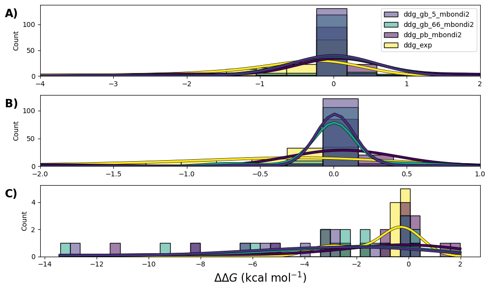
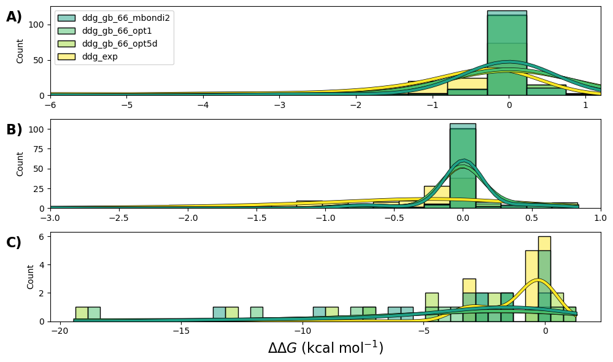
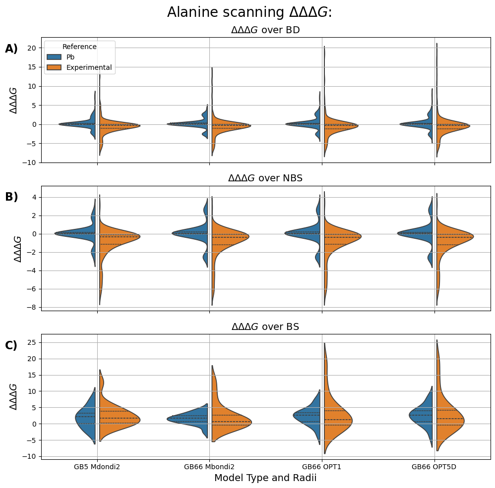

HTMS Amber Examples¶
The figures and tables presented in this section are generated using the tables_and_figures notebook in the data_analysis folder within this repo.
Moreover, within the data_analysis folder, we include CSVs containing the results presented in the paper (the application of the pipeline to the SARS-CoV-2-ACE2).
 Histograms with Kernel Density Estimation (KDE) of the predicted \(\Delta\Delta G_{bind}\) (kcal/mol) are presented. These are shown over two GB models (GB5, GB66) and a PB model, all with Mbondi2 radii, and compared with DMS resultsfor Alanine scanning.
The outputs from the Alanine scanning pipeline are divided into three sections to better visualize the impact of mutations:
A) BD
B) N-BS
C) BS
Note
Horizontal scales are limited in these histograms to highlight high-density regions for each section.
PPRM |
mean |
p_skewness |
std |
|
|---|---|---|---|---|
\(\Delta \Delta G_{\text{bind}}\) GB66 Mbondi2 BD |
0.12 |
-0.36 |
-5.64 |
1.58 |
\(\Delta \Delta G_{\text{bind}}\) GB66 OPT1 BD |
0.11 |
-0.45 |
-6.11 |
2.07 |
\(\Delta \Delta G_{\text{bind}}\) GB66 OPT5D BD |
0.13 |
-0.45 |
-6.11 |
2.19 |
\(\Delta \Delta G_{\text{bind}}\) Experimental BD |
0.01 |
-1.00 |
-2.10 |
1.51 |
\(\Delta \Delta G_{\text{bind}}\) GB66 Mbondi2 N-BS |
0.42 |
-0.02 |
-4.19 |
0.36 |
\(\Delta \Delta G_{\text{bind}}\) GB66 OPT1 N-BS |
0.40 |
-0.03 |
-4.94 |
0.40 |
\(\Delta \Delta G_{\text{bind}}\) GB66 OPT5D N-BS |
0.45 |
-0.02 |
-4.09 |
0.40 |
\(\Delta \Delta G_{\text{bind}}\) Experimental N-BS |
0.01 |
-0.99 |
-2.16 |
1.54 |
\(\Delta \Delta G_{\text{bind}}\) GB66 Mbondi2 BS |
0.01 |
-3.27 |
-1.44 |
3.79 |
\(\Delta \Delta G_{\text{bind}}\) GB66 OPT1 BS |
0.02 |
-4.07 |
-1.56 |
5.20 |
\(\Delta \Delta G_{\text{bind}}\) GB66 OPT5D BS |
0.03 |
-4.26 |
-1.53 |
5.51 |
\(\Delta \Delta G_{\text{bind}}\) Experimental BS |
0.01 |
-1.05 |
-0.91 |
1.27 |
Statistical features of the \(\Delta\Delta G_{bind}\) (kcal/mol) KDEs are presented for GB66 with three different sets of radii (Mbondi2, OPT1, and OPT5D) and DMS, decomposed into the BD, N-BS, and the BS.
 Histograms with Kernel Density Estimation (KDE) of the predicted \(\Delta\Delta G_{bind}\) (kcal/mol) are presented for GB66, using three different sets of radii: Mbondi2, OPT1, and OPT5D. These are compared with DMS results for Alanine scanning.
The outputs from the Alanine scanning pipeline are divided into three sections to better visualize the impact of mutations:
A) BD
B) N-BS
C) BS
Note
Horizontal scales are limited in these histograms to highlight high-density regions for each section.
 Error distributions for Alanine scanning are presented, with both PB (blue, \(\Delta\Delta\Delta G_{bind,PB}\)) and Experimental (orange, \(\Delta\Delta\Delta G_{PB}\)) results in (kcal/mol) as reference. This is shown for the GB5 mbondi2, GB66 mbondi2, GB66 OPT1, and GB66 OPT5D models.
A) \(\Delta\Delta\Delta G_{bind}\) comparison over the BD.
B) \(\Delta\Delta\Delta G_{bind}\) comparison over the N-BS.
C) \(\Delta\Delta\Delta G_{bind}\) comparison over the BS.
Model |
GB5 Mbondi2 |
GB66 Mbondi2 |
GB66 OPT1 |
GB66 OPT5D |
|---|---|---|---|---|
RMSE \(\Delta \Delta \Delta G_{\text{bind,PB}}\) BD |
1.45 |
1.31 |
1.57 |
1.66 |
mean \(\Delta \Delta \Delta G_{\text{bind,PB}}\) BD |
0.25 |
0.22 |
0.31 |
0.32 |
PCC \(\Delta \Delta \Delta G_{\text{bind,PB}}\) BD |
0.57 |
0.65 |
0.67 |
0.66 |
RMSE of worst 20% \(\Delta \Delta \Delta G_{\text{bind,PB}}\) BD |
3.09 |
2.75 |
3.29 |
3.50 |
RMSE \(\Delta \Delta \Delta G_{\text{bind,PB}}\) N-BS |
0.97 |
1.15 |
1.16 |
1.17 |
mean \(\Delta \Delta \Delta G_{\text{bind,PB}}\) N-BS |
0.06 |
0.06 |
0.07 |
0.06 |
PCC \(\Delta \Delta \Delta G_{\text{bind,PB}}\) N-BS |
0.05 |
-0.50 |
-0.45 |
-0.48 |
RMSE of worst 20% \(\Delta \Delta \Delta G_{\text{bind,PB}}\) N-BS |
2.11 |
2.54 |
2.57 |
2.59 |
mean \(\Delta \Delta \Delta G_{\text{bind,PB}}\) BS |
1.87 |
1.59 |
2.40 |
2.58 |
RMSE \(\Delta \Delta \Delta G_{\text{bind,PB}}\) BS |
3.50 |
2.27 |
3.49 |
3.84 |
PCC \(\Delta \Delta \Delta G_{\text{bind,PB}}\) BS |
0.63 |
0.90 |
0.89 |
0.87 |
RMSE of worst 20% \(\Delta \Delta \Delta G_{\text{bind,PB}}\) BS |
5.95 |
3.68 |
5.65 |
6.31 |
Statistical information for MMGBSA results for Alanine scanning is provided with respect to DMS data (\(\Delta\Delta\Delta G_{bind, exp}\) (kcal/mol)) over multiple GB variants and radii. The results are calculated with respect to the BD, N-BS, and the BS.